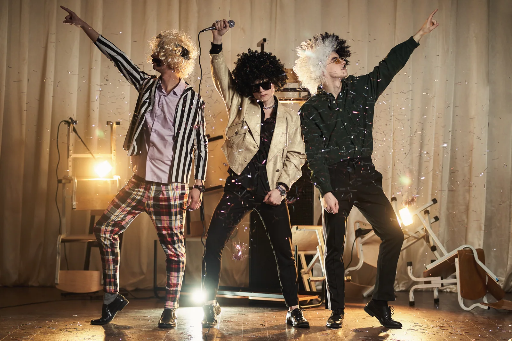
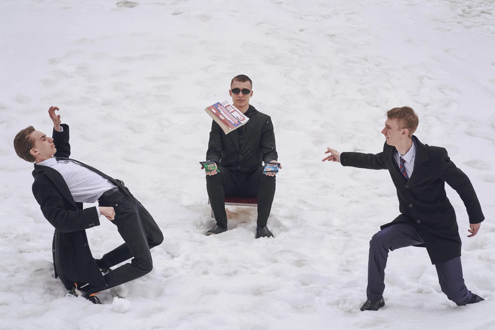
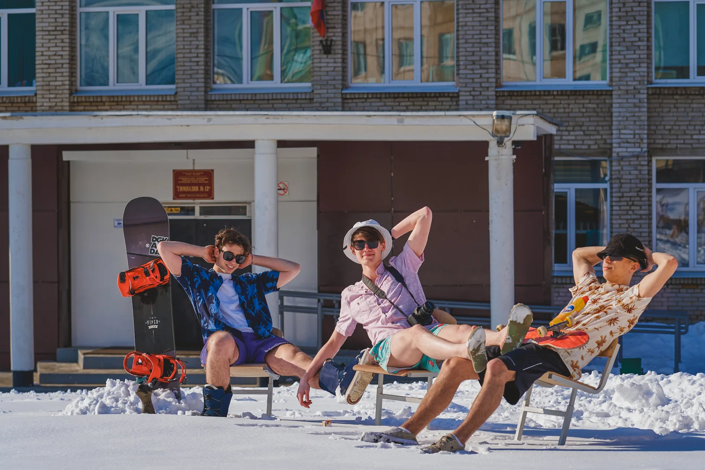
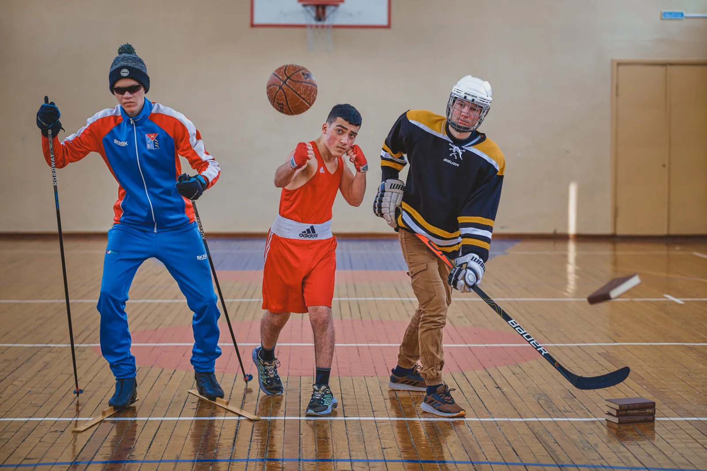
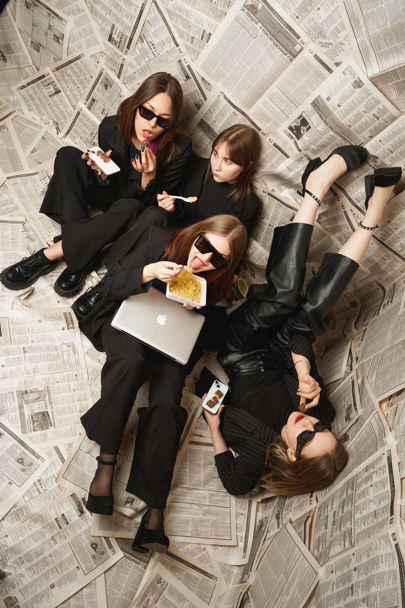
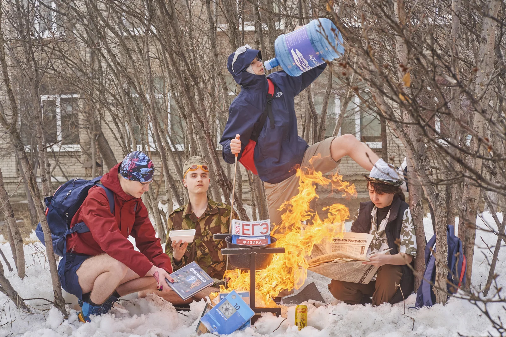
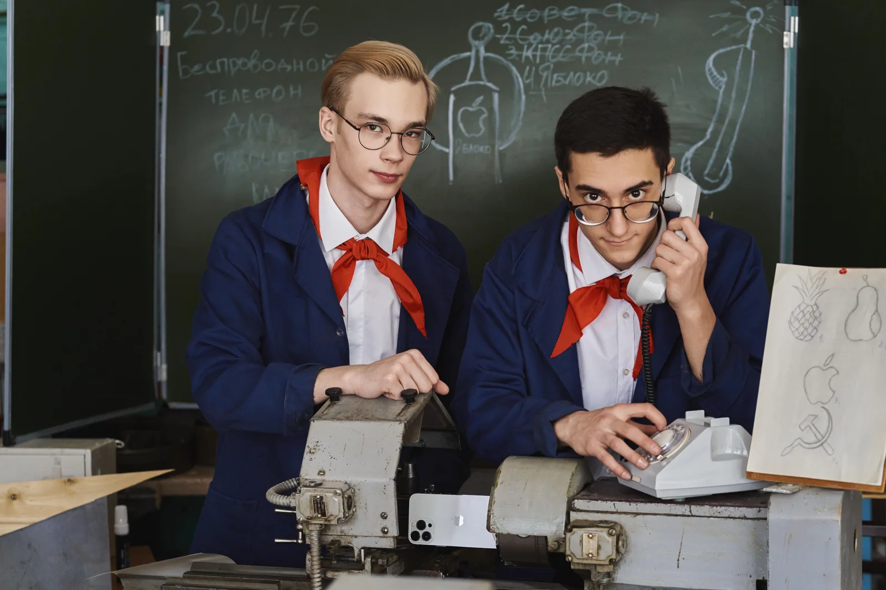
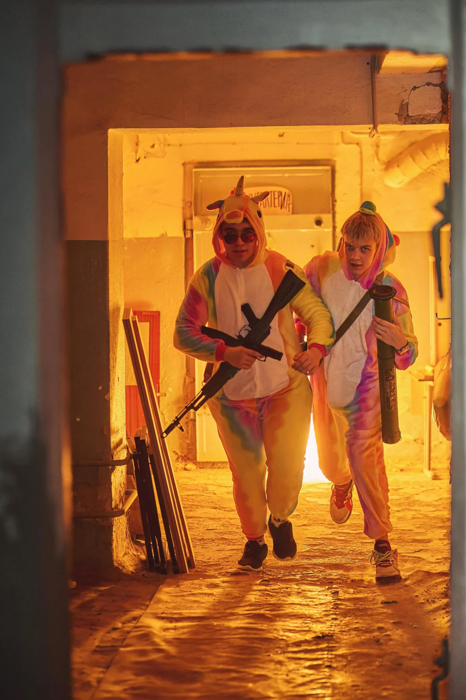

ИДЕИ И ПОДГОТОВКА · ИМБА
Творческие компании: придумайте вместе
Ваша компания может придумать смешную сцену, общую историю или необычный образ. Начните с того, что вас объединяет: друзей, увлечений, общих шуток или любимого фильма.
Как подготовиться
- Выберите общую идею или найдите пример, который нравится всей компании.
- Заранее обсудите с фотографом локацию, время и детали.
- Распределите роли и реквизит; помогайте друг другу готовить место, пока снимают других.
Сложные эффекты и условия съёмки согласуйте заранее с фотографом; не пытайтесь самостоятельно повторять опасные сцены.
Примеры для вдохновения
Это истории других ребят, а не обязательные шаблоны. Детали подготовки по некоторым фото описаны как возможный вариант; свою идею обсудим лично.
Общая идея и детали
Одежда, необычное оформление и реквизит помогают друзьям разыграть собственную сцену. Подготовьте фон и вещи вместе.

Своя группа на сцене
Образы, микрофон и школьная сцена создают общую историю. Заранее распределите роли и договоритесь, кто что принесёт.

Любимая история по-своему
Знакомый сюжет можно переосмыслить со своими шутками и школьными деталями. Покажите фотографу пример заранее.

Летнее настроение зимой
Одежда, очки, реквизит и школьный двор создают неожиданный контраст. Продумайте вещи и условия съёмки заранее.

Каждый со своим увлечением
В одной фотографии могут встретиться разные увлечения. Договоритесь об общей композиции и принесите свои вещи.
Сюжет из обычных вещей
Простые предметы и общая задумка могут превратить школьную столовую в сцену для вашей компании.

Сделайте своё пространство
Газеты, одежда и реквизит создают единое настроение. Помогайте друг другу подготовить место, пока фотограф снимает других.

Своя история во дворе
Школьный двор тоже может стать локацией для идеи компании. Сложные эффекты и доступ к месту обсудите с фотографом заранее.

Роли и детали эпохи
Общие образы и школьные предметы помогают разыграть историю. Согласуйте роли, одежду и место заранее.

Необычные образы вместе
Костюмы и общая задумка создают запоминающийся кадр. Подготовку и возможности площадки обсудите заранее.